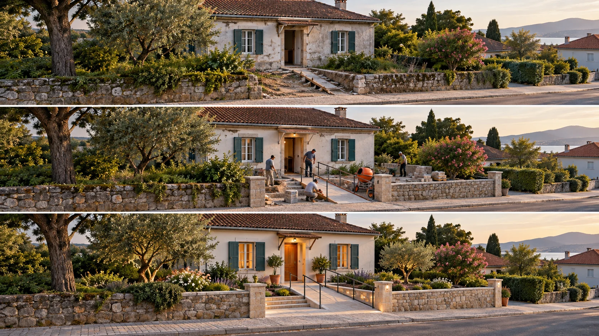

P17 · 초급 · 제작·활용
DIY SOS: 변화 전후를 잇는 장소 영상
변한 내용과 촬영 조건의 차이를 구분하도록 반복 촬영의 기준물을 정한다.
그림에서 확인할 세 가지전후 비교에서 유지할 구도와 달라질 내용을 나눈다.
1공사 전
가상 주택 그림에서 이후에도 남을 건물의 큰 형태와 주변 길을 찾는다. 이후 화면을 비교할 기준으로 무엇을 사용할지 정한다.
2진행 중
같은 구도의 공사 중 그림에서 달라진 부분만 짚어 본다. 빛이나 시점의 차이 때문에 실제 변화가 과장되어 보이는지도 살핀다.
3달라진 진입 방식
완공 화면의 경사로와 손잡이를 처음 화면의 나무판과 비교한다. 건물 전체보다 출입구에 접근하는 방식이 구체적으로 어떻게 달라졌는지 찾는다.
촬영 설계
촬영을 이렇게 설계한다
다시 찾을 기준물 선택
교육 제안: 건물 모서리·도로·주변 수목 중 다음 방문에도 남을 요소를 고른다. 변할 구조물만 기준으로 잡으면 완공 뒤 같은 화면을 맞추기 어려워질 수 있다.
구도와 조건 함께 기록
교육 제안: 첫 촬영의 결과 프레임과 대상의 화면 위치를 남긴다. 단순히 같은 높이만 기억하기보다 화각·방향·그림자 차이가 비교에 어떤 영향을 주는지 함께 적는다.
차이를 정직하게 보여주기
교육 제안: 조건을 완전히 맞출 수 없다면 동일 구도라고 주장하지 않는다. 넓은 장소 컷으로 위치를 확인하고 서로 다른 시기의 상세 컷을 구분해 제시하는 대안을 선택한다.
DIY SOS의 맨체스터 주택 현장을 여러 차례 방문해 장소 전경을 촬영했다.
원본 영상DIY SOS: 변화 전후를 잇는 장소 영상
1. 변하지 않은 기준
원본에서 다른 방문 시점으로 보이는 화면이 있다면 반복되는 건물과 길을 찾는다. 같은 장소라고 판단할 근거를 먼저 기록한다.
2. 촬영 조건의 차이
서로 비교할 수 있는 장면의 그림자·건물 각도·화면 크기를 살핀다. 공사의 변화와 촬영 조건의 차이가 뒤섞이는지 판단한다.
3. 근거 범위
원본에서 실제로 다른 날짜의 화면이 나오는지 확인한다. 여러 방문의 기록과 전·중·후를 같은 구도로 비교한 촬영은 다른 사실로 구분한다.
재생이 제한되면 원본 영상 새 창을 이용하세요.
제작진 설명 · 한국어 요약 번역
현장 방문의 기록과 반복 구도의 학습안을 나눈다
제작 의뢰
원문 요약 번역: Halo Vue의 현재 제작 소개는 맨체스터 특집에서 현장과 장소의 전경을 제공하는 브리프를 받았고 해당 거리를 여러 번 방문했다고 밝힌다.
미확인 세부
공사 전·진행 중·완공일에 동일 구도를 반복했다는 세부 설명은 현재 본문에서 확인되지 않는다.
학습안 범위
교안의 세 단계 비교는 교육 제안으로 한정한다.
Kling 프롬프트단문 인과 체인 · 16:9
내가 직접 만들어 본다
카메라 위치와 기준물을 고정해 두어, 달라진 것이 건물이지 시점이 아님을 보이게 하는 관계를 지시한다.
- S01길가의 작은 주택 앞에 드론이 떠 있다.
- S02영상은 하나의 연속 쇼트다.
- S03처음 10초 동안 드론은 주택 모서리와 길을 화면 같은 자리에 둔다.
- S04입구에는 낡은 나무판이 놓여 있다.
- S05다음 10초 동안 공사가 진행되며 입구가 달라진다.
- S06드론은 움직이지 않기 때문에 달라진 부분만 눈에 띈다.
- S07모서리와 길과 나무는 처음 자리에 그대로 남는다.
- S08그래서 달라진 것은 카메라가 아니라 건물로 읽힌다.
- S09마지막 10초 동안 입구에 경사로와 손잡이가 놓인다.
- S10드론은 입구 쪽으로 조금만 다가간다.
- S11다가가도 기준 모서리는 화면 가장자리에 남는다.
- S12그 결과 달라진 진입 방식이 처음 화면과 비교된다.
[네거티브]
- 주택이 아닌 큰 건물 단지가 등장하는 것 금지
- 공사 전후가 별개 컷으로 이어 붙는 것 금지
- 모서리와 길이 화면 밖으로 나가 있는 것 금지
- 처음부터 경사로가 놓여 있는 것 금지
- 공사 중 주택 전체의 모양이 바뀌는 것 금지
- 드론이 흔들려 시점 변화가 변화처럼 보이는 것 금지
- 기준이 되는 나무나 길이 사라지거나 옮겨지는 것 금지
- 카메라 위치가 바뀐 것으로 읽혀 비교가 무너지는 것 금지
- 경사로만 있고 손잡이가 빠져 있는 것 금지
- 크게 다가가 주택 전체가 잘려 나가는 것 금지
- 다가가면서 기준 모서리가 화면을 벗어나는 것 금지
- 처음의 나무판 흔적이 없어 비교할 수 없는 것 금지
결과에서 볼 것
- 카메라가 움직이지 않아 달라진 점이 건물로 읽혔는가
- 기준 모서리와 길이 끝까지 같은 자리에 있었는가
- 나무판과 경사로의 차이가 한눈에 비교되었는가